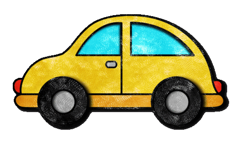

You go out to your car and start to drive.
Thoughts of life and all those things start filling your head.
Before you know it a bit of time has passed,
about an hour,
and you're starting to get bored of driving.
You try to decide if you want to...
go back home or to keep driving
